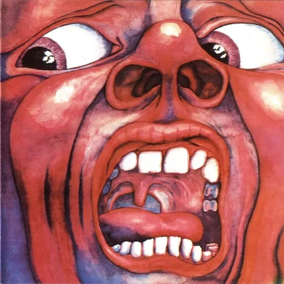
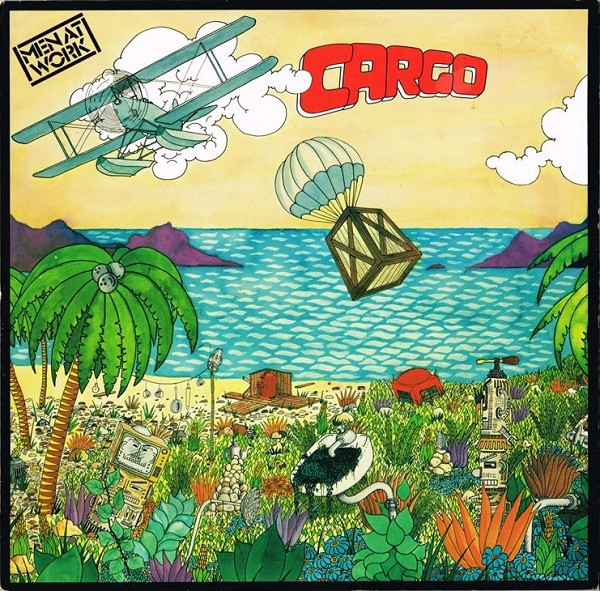

Кино - Группа Крови
One of the first albums I got on vinyl. Probably among my favourites, I've listened to it dozens of times. My favourite track is "Закрой за мной дверь, я ухожу", second song on side A
King Crimson - In the Court of the Crimson King
Amazing album, and the unofficial soundtrack to many summer nights. "I talk to the wind" is a very underrated track, and it tends to be overshadowed by "Epitaph" and "The court of the Crimson King".

Pink Floyd - The Dark Side of the Moon
This is honestly such a classic that talking about it is hardly necessary, I always make sure to listen to it on planes. My favourite track is probably "Any colour you like", but the album should be listened to in its entirety on each listen.
Men at Work - Cargo
I bought this album during a pretty busy period of college, so I wasn't able to listen to it a lot. It has some great songs, however. I find myself humming "It's a Mistake" sometimes while doing the dishes.